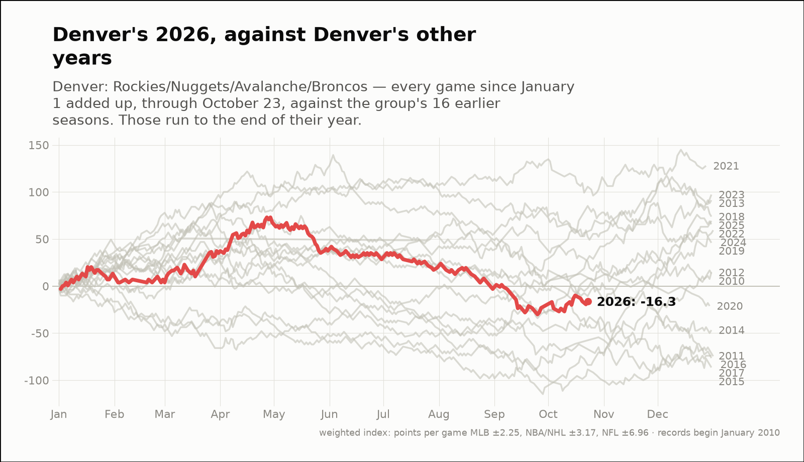
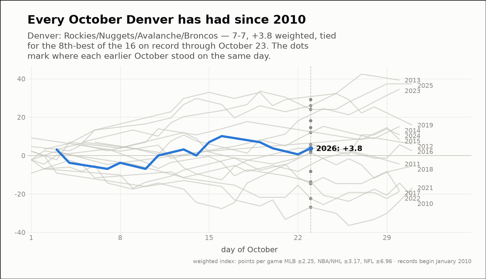
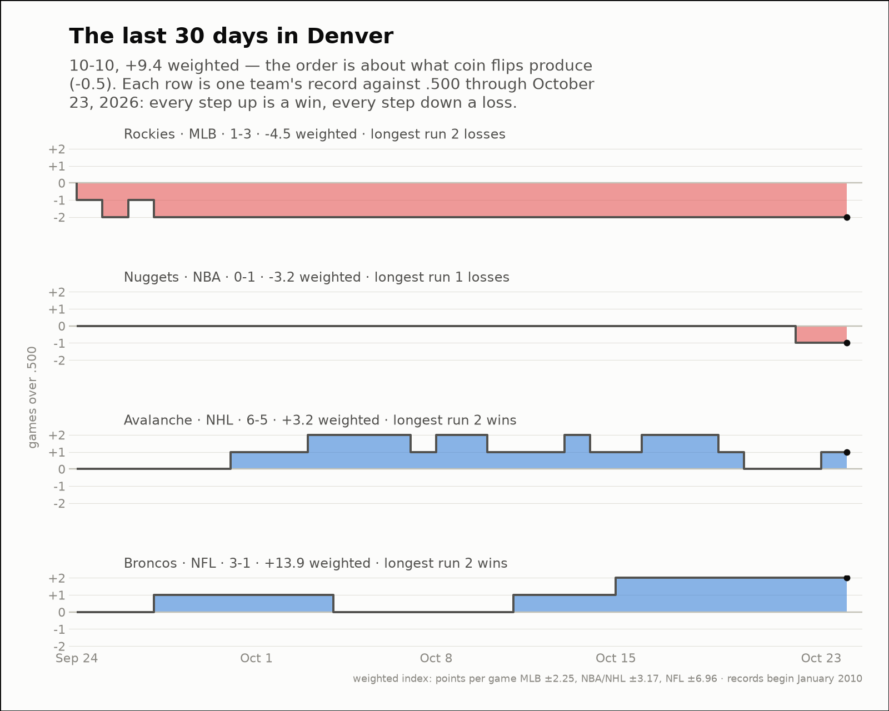

City of the day — Denver
Denver: Rockies/Nuggets/Avalanche/Broncos
- 2026 so far
- 136-158, -16.3 weighted over 294 games; longest run 9 straight wins
- Order of results
- about as clumped as coin flips (-0.6)
- Earlier seasons (full-year weighted)
- 2010 +13.5, 2011 -74.1, 2012 +14.5, 2013 +91.2, 2014 -46.8, 2015 -86.5, 2016 -74.6, 2017 -76.5, 2018 +73.8, 2019 +46.0, 2020 -21.1, 2021 +127.8, 2022 +65.7, 2023 +97.2, 2024 +59.3, 2025 +69.3
- Last 30 days
- 10-10, +9.4 weighted; longest run 3 straight wins
- Window opens
- September 24, 2026
- October 2026 through day 23
- 7-7, +3.8 weighted — tied for the 8th-best of the 16 on record
- Same October in earlier years (same stretch)
- 2010 -13.7, 2011 +5.7, 2012 +2.3, 2013 +29.1, 2014 +12.0, 2015 +14.5, 2016 -8.3, 2017 -14.6, 2018 +1.5, 2019 +26.0, 2021 -26.9, 2022 -22.4, 2023 +18.1, 2024 +3.8, 2025 +24.0
| Team | Last 30 days | Weighted | Longest run |
|---|---|---|---|
| Rockies | 1-3 | -4.5 | 2 straight losses |
| Nuggets | 0-1 | -3.2 | 1 straight losses |
| Avalanche | 6-5 | +3.2 | 2 straight wins |
| Broncos | 3-1 | +13.9 | 2 straight wins |


